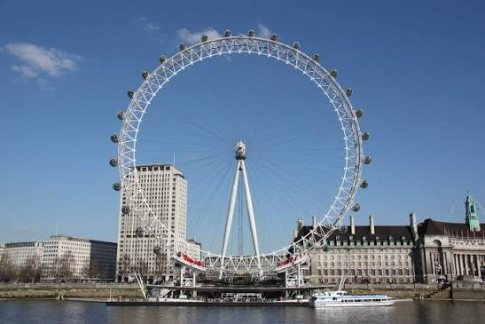
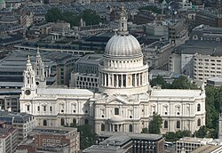
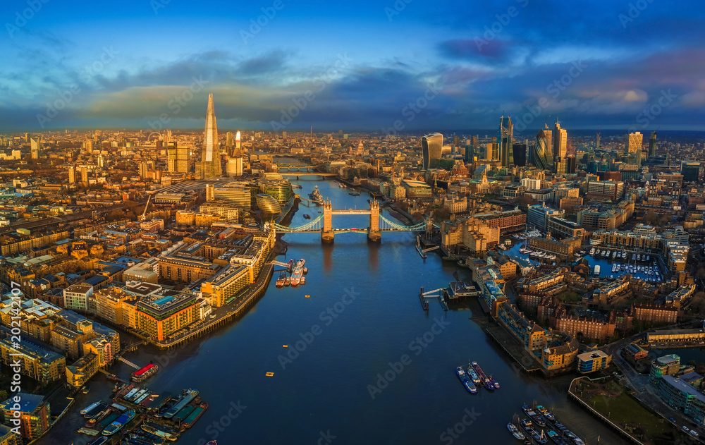

Galeria Multimédia
Explore o ambiente de Londres através de fotografias, vídeos e poesia.
Fotografias








Vídeo Turístico
Poema de Londres
Sobe o Tamisa a névoa devagar,
o Big Ben conta as horas à cidade,
e o vermelho dos autocarros a passar
pinta de pressa a velha claridade.Em cada ponte, um século a espreitar,
em cada rua, um mundo a começar,
Londres guarda, entre a chuva e o luar,
a promessa de sempre regressar.
Entre história e horizonte
Londres revela-se a cada passo.

London is a city of a thousand stories.